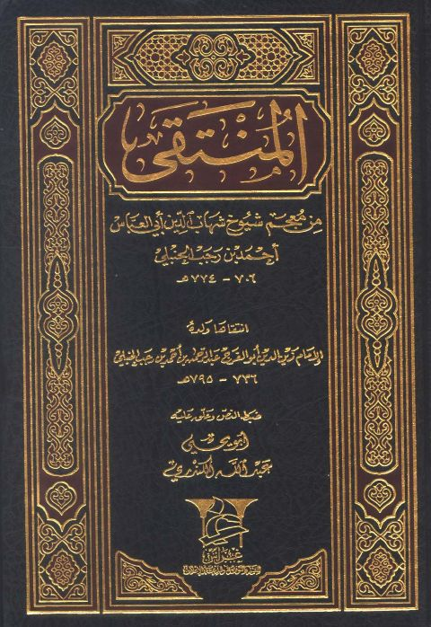
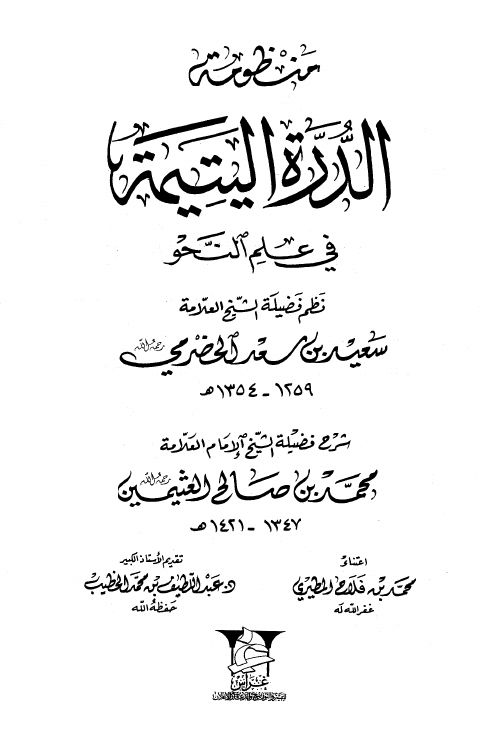

غراس للنشر والتوزيع
Publisher
Resources
 منظومة القواعد الفقهية ومنظومة أصول الفقه وقواعده
منظومة القواعد الفقهية ومنظومة أصول الفقه وقواعده
محمد بن صالح العثيمين
منظومة القواعد الفقهية ومنظومة أصول الفقه وقواعده
منظومة القواعد الفقهية ومنظومة أصول الفقه وقواعده
محمد بن صالح العثيمين

المنتقي من معجم شيوخ شهاب الدين أبي العباس أحمد بن رجب الحنبلي المنتقي من معجم شيوخ شهاب الدين أبي العباس أحمد بن رجب الحنبلي زين الدين أبو الفرج عبد الرحمن بن أحمد بن رجب الحنبلي صحيح رياض الصالحين من حديث سيد المرسلين، وبذيله حواش نفيسة وتعليقات منيفة
صحيح رياض الصالحين من حديث سيد المرسلين، وبذيله حواش نفيسة وتعليقات منيفة
يحيى بن شرف النووي • محمد ناصر الدين الألباني
صحيح رياض الصالحين من حديث سيد المرسلين، وبذيله حواش نفيسة وتعليقات منيفة
صحيح رياض الصالحين من حديث سيد المرسلين، وبذيله حواش نفيسة وتعليقات منيفة
يحيى بن شرف النووي • محمد ناصر الدين الألباني

منظومة الدرة اليتيمة في علم النحو منظومة الدرة اليتيمة في علم النحو سعيد بن سعد الحضرمي